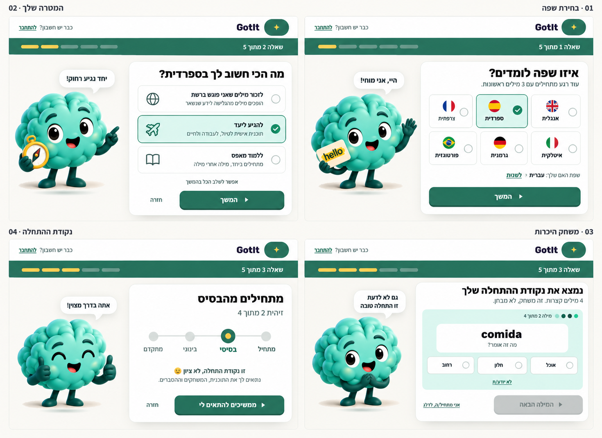
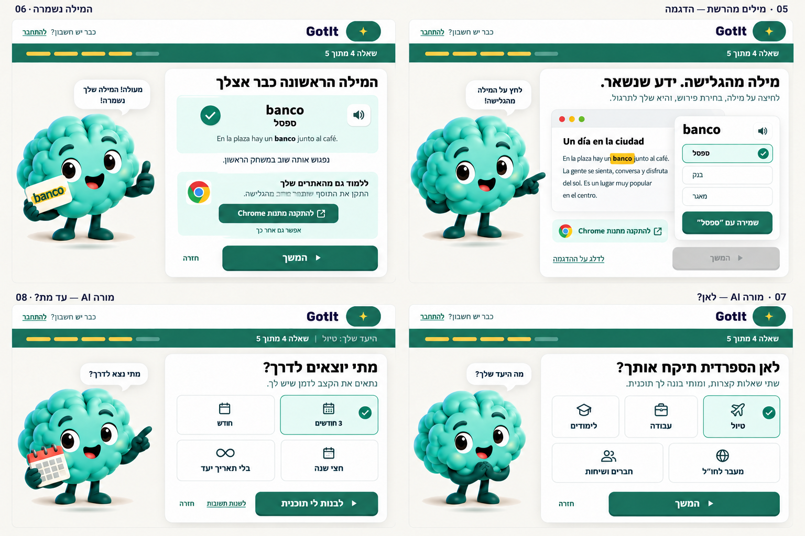
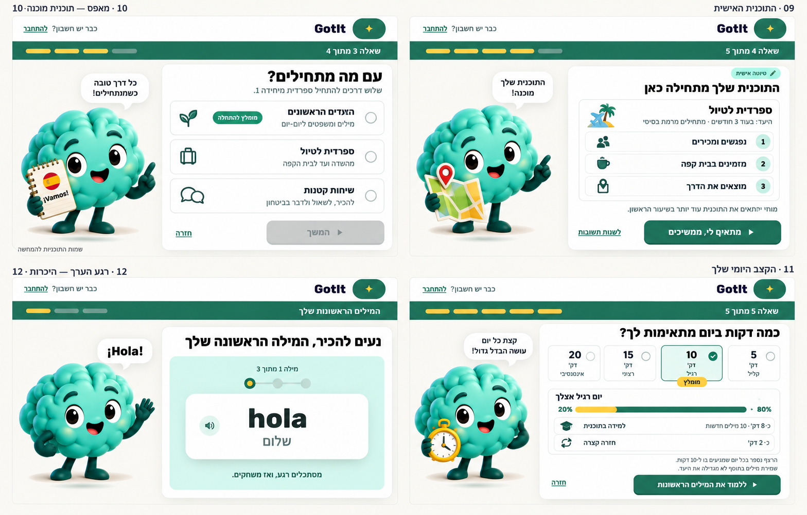
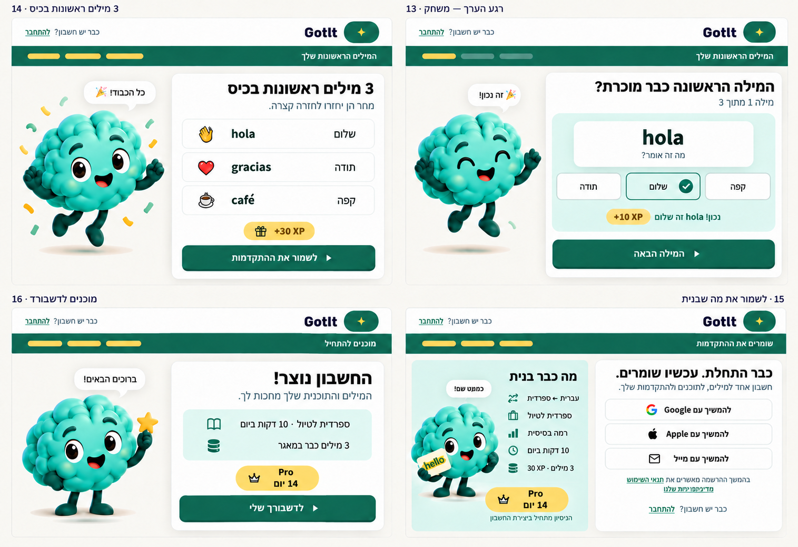

1. שפה, מטרה ובדיקת רמה
מסכים 1–4 · לחיצה על התמונה פותחת אותה בגודל מלא.

2. הסתעפויות: תוסף וראיון עם מוחי
מסכים 5–8 · לחיצה על התמונה פותחת אותה בגודל מלא.

3. תוכנית, קצב יומי והמילה הראשונה
מסכים 9–12 · לחיצה על התמונה פותחת אותה בגודל מלא.

4. למידה, חגיגה ושמירת ההתקדמות
מסכים 13–16 · לחיצה על התמונה פותחת אותה בגודל מלא.
